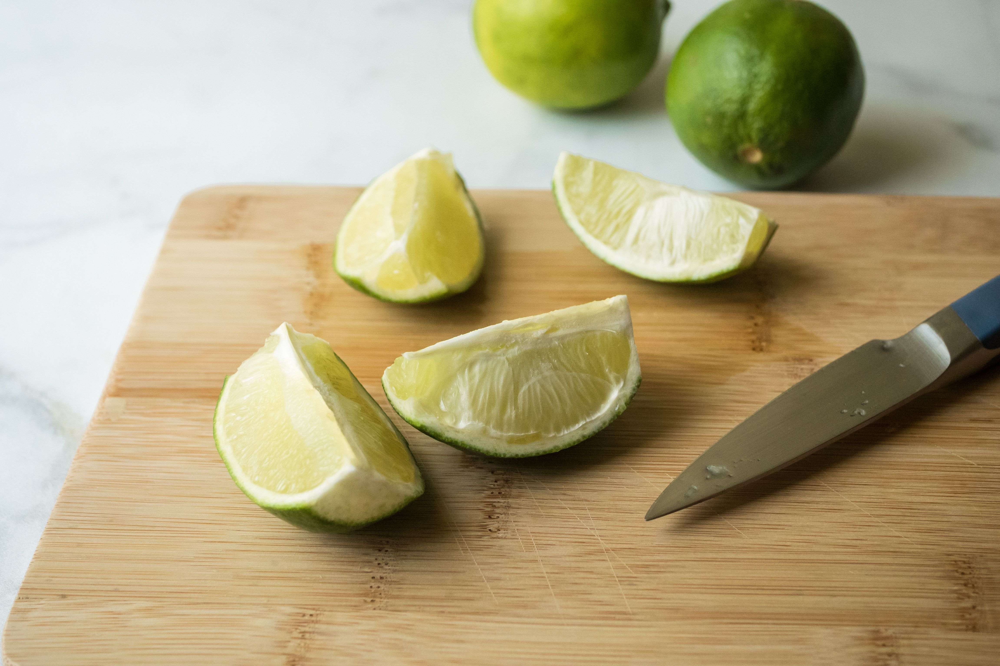
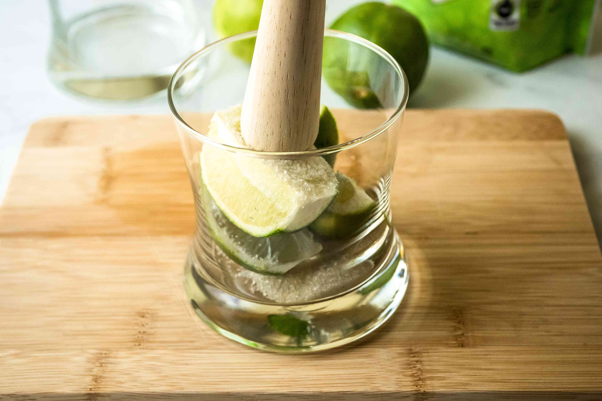
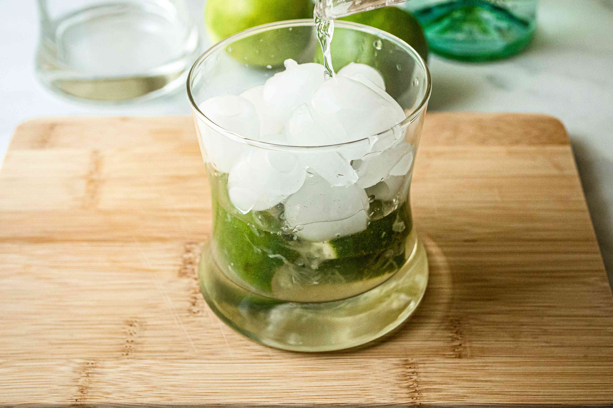

Caipirinha

Image: Elise Bauer
Image: Elise Bauer
Caipirinha is a cocktail made with cachaça, a Brazilian liquor made from fermented sugarcane, sugar, and limes. This cocktail is refreshingly sweet, tart, and the cachaça adds somewhat grassy and herbaceous flavor notes.
Cachaça is not rum, as a lot of people assume. While rum is made from molasses, the by-product of sugar production, cachaça is made from the juice of sugarcane. And while rhum agricole is also made from the juice of sugarcane, these two liquors differ as the alcohol by volume (ABV) of cachaça is much lower at 38 to 48 percent, while rhum agricole is upwards of 70 percent.
Cachaça must be made from Brazilian sugarcane. In general, the flavor of the liquor is floral, spicy, and grassy, but every brand will have its unique flavor profile.
Slice the ends off the lime. Quarter the lime lengthwise.
Place the quartered lime in a double rocks glass and sprinkle in the sugar. Muddle the limes and sugar until the sugar is dissolved and the limes have been fully released their juices.
Fill the glass with crushed ice and pour the cachaça over the ice. Gently stir to combine and serve.
